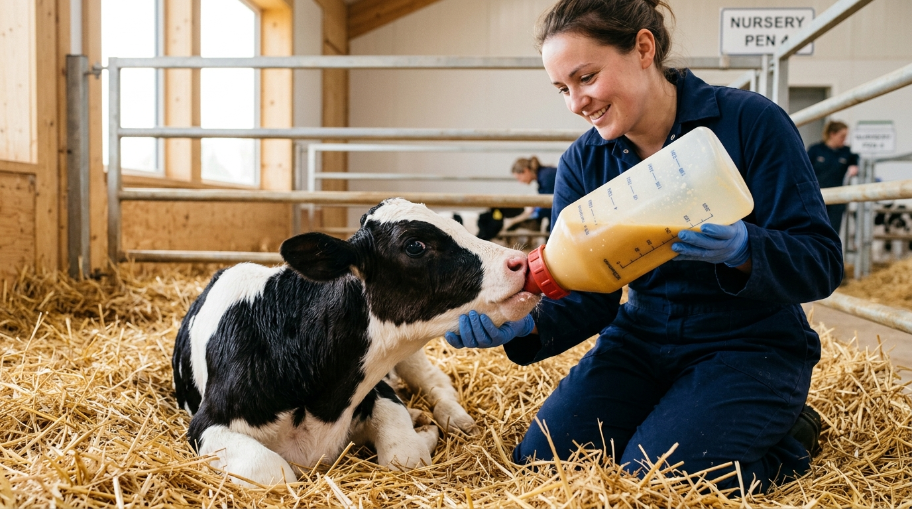
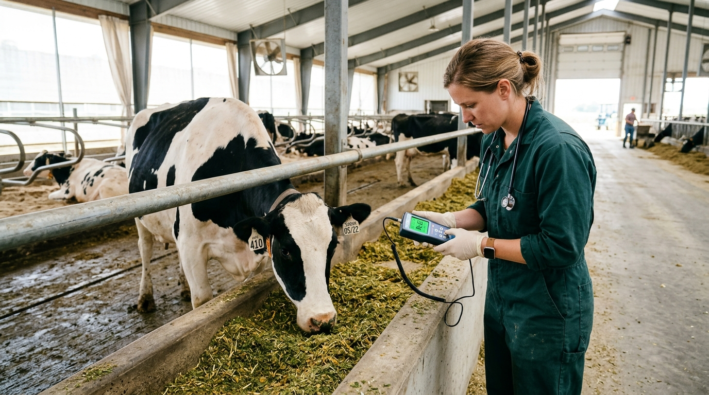
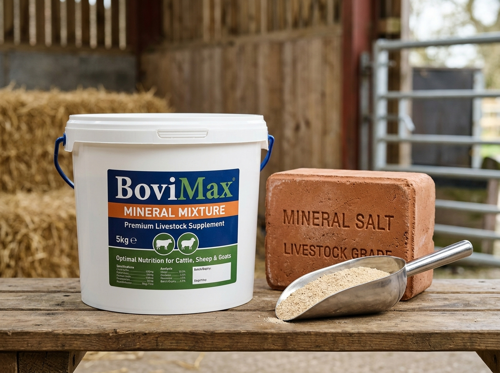
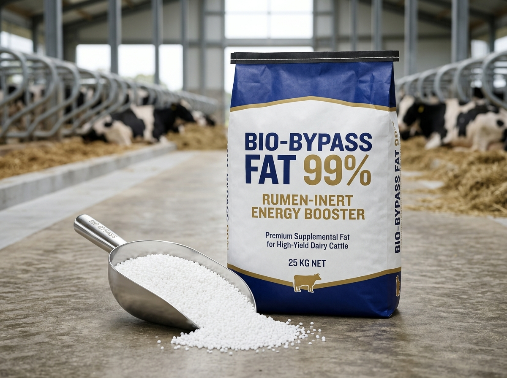
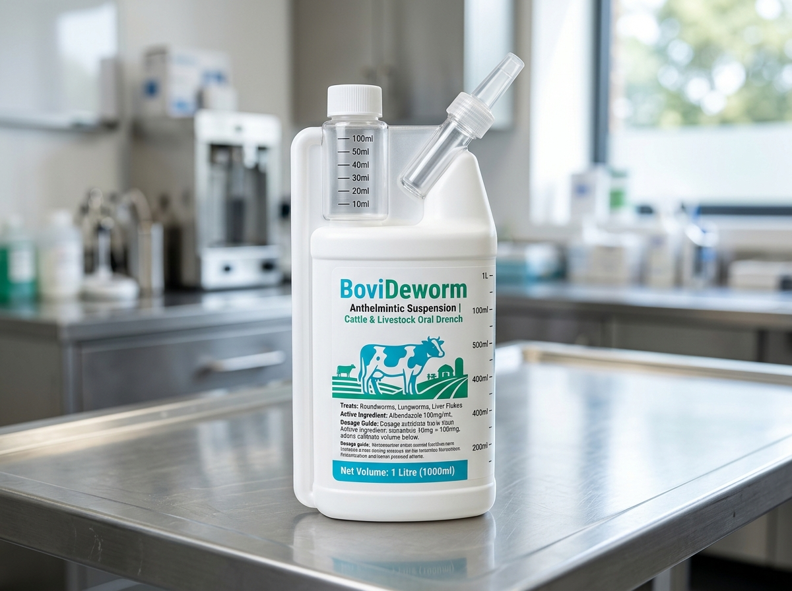
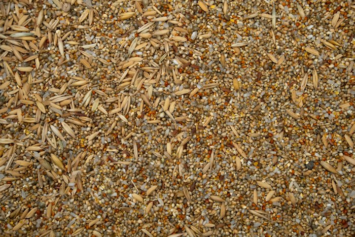

The First 24 Hours: Colostrum Protocols for Zero Calf Mortality
Critical timing, Brix refractometer scoring, and clean harvesting techniques to ensure passive transfer of maternal immunoglobulins.
Field research, nutritional best practices, and metabolic veterinary management for modern dairy cattle and beef ranchers.

Calf ManagementCritical timing, Brix refractometer scoring, and clean harvesting techniques to ensure passive transfer of maternal immunoglobulins.

VeterinaryHow ruminal buffers, adequate physically effective fiber (peNDF), and continuous rumination monitoring safeguard herd longevity.

ReproductionAddressing repeat breeding and digital dermatitis by switching from inorganic sulfates to organic glycinate-chelated mineral packs.

Peak LactationA comparative review of 99% palmitic acid prills versus calcium soaps of fatty acids during early lactation negative energy balance.

BiosecurityFecal egg count reduction tests (FECRT) and combination therapies to prevent resistant Ostertagia and Fasciola hepatica populations.

Poultry NutritionCoarse vs fine particle oyster shell calcium inclusion strategies to prevent egg breakage during automated conveyor packing.